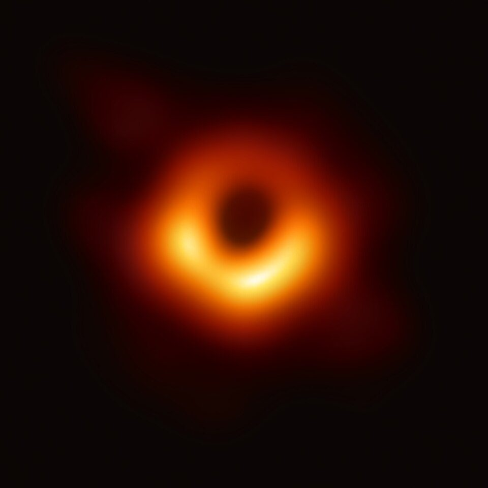

Cifras y récords del universo
Lo más grande, lo más caliente, lo más rápido y lo más lejano: los récords del cosmos en una sola página.


El universo bate récords que desafían la imaginación. Estos son algunos de los más asombrosos que conocemos hoy, aunque muchos cambian cada pocos años gracias a nuevos telescopios.
En el sistema solar
| Récord | Quién lo tiene | Cifra |
|---|---|---|
| Planeta más grande | Júpiter | 139.820 km de diámetro |
| Planeta más caliente | Venus | 465 °C de media |
| Planeta más frío | Urano | −224 °C |
| Día más corto | Júpiter | 9 h 56 min |
| Día más largo | Venus | 243 días terrestres |
| Vientos más rápidos | Neptuno | 2.100 km/h |
| Volcán más alto | Olympus Mons (Marte) | ≈ 22 km |
| Luna más grande | Ganímedes | 5.268 km |
| Planeta con más lunas | Saturno | 274 |
| Objeto visitado más lejano | Arrokoth | 6.600 millones de km |
Estrellas y agujeros negros
- Estrella más grande conocida: candidatas como UY Scuti o Stephenson 2-18, con un radio de 1.700 a 2.150 veces el del Sol. Si se pusiera una en el lugar del Sol, su superficie llegaría más allá de la órbita de Júpiter o incluso de Saturno.
- Estrella más masiva: R136a1, en la Gran Nube de Magallanes, con unas 200 masas solares.
- Estrella más cercana: Próxima Centauri, a 4,24 años luz.
- Estrella más brillante del cielo nocturno: Sirio, a 8,6 años luz.
- Agujero negro más grande: los de algunos cuásares, como TON 618, se estiman en decenas de miles de millones de masas solares.
- Objeto más denso que no es agujero negro: las estrellas de neutrones. Una cucharadita de su materia pesaría unos 1.000 millones de toneladas.
Galaxias y universo
- Galaxia más lejana confirmada: el telescopio James Webb ha confirmado galaxias como MoM-z14, cuya luz salió cuando el universo tenía unos 280 millones de años.
- Galaxia grande más cercana: Andrómeda, a 2,5 millones de años luz. Se ve a simple vista desde lugares oscuros.
- Estructura más grande: supercúmulos y «murallas» de galaxias de más de mil millones de años luz, como la Gran Muralla Hércules-Corona Boreal.
- Lugar natural más frío conocido: la nebulosa del Bumerán, a −272 °C, solo un grado por encima del cero absoluto y más fría que el propio fondo cósmico.
- Temperatura más alta: en los primeros instantes del Big Bang se alcanzaron billones de grados.
Cifras que dan vértigo
- En el universo observable hay, según las estimaciones, unos 2 billones de galaxias y más estrellas que granos de arena en todas las playas de la Tierra.
- La Vía Láctea tiene entre 100.000 y 400.000 millones de estrellas.
- El universo observable mide unos 93.000 millones de años luz de diámetro.
- Cada segundo, la Tierra recorre 30 kilómetros en su órbita, y el Sol arrastra todo el sistema solar a 230 km/s alrededor del centro de la galaxia.